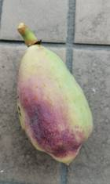
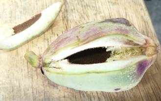
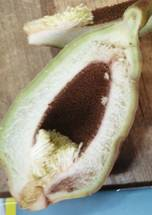
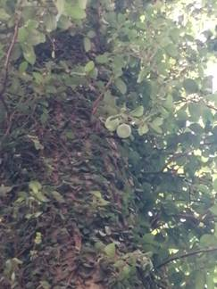
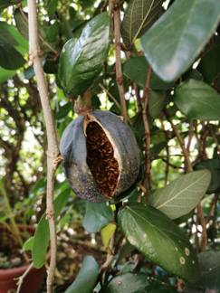
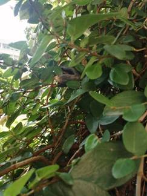
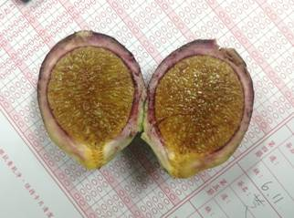
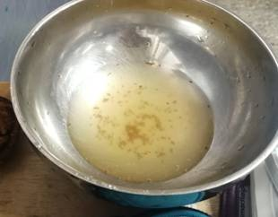
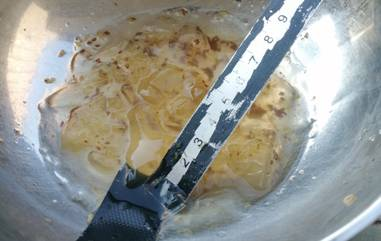
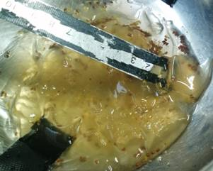

用薜荔的果實製作果凍
最近我發現學校角落一棵椰子樹上爬滿了一種藤蔓，上面還結了許多表面有綠色和紫色形狀奇特的無花果。上網查詢後認定這是一種叫做「薜荔」的爬藤植物，屬於桑科榕屬，是一種無花果，常用來裝飾牆面。年輕的枝條葉片細小，緊貼樹皮攀爬；而枝條成熟後，葉子會變大並向外伸展，並且會結無花果。
維基百科上說薜荔是愛玉的近親，而愛玉籽可以做成凍，薜荔應該也會有相同的效果，我決定嘗試一顆地上撿的無花果來試試看。
把它切開來後發現裡面幾乎沒有種子，我還是把上面咖啡色的顆粒刮下來，用手帕包起來放進水裡搓，但是搓完後放了幾個小時卻完全沒有黏稠感，便以失敗告終。
  
▲薜荔的雄果
幾個月後才得知原來之前撿的是雄果，但只有雌果才能做凍，我就再次跑去找雌果。此時雄果都已經掉落，而雌果形狀比較圓，不會掉落，大多數都高高掛著不易採摘，好不容易才找到一顆碰的到的。切開來就可以發現與雄果完全不同，裡面黃黃的有很多果肉。
   
▲薜荔的雌果
一樣用毛巾包起來搓，這次搓出的顏色較黃，看起來比較有希望成功。放了半小時它還是完全沒有要凝固的跡象，根據網路上別人的經驗，要在冰箱放一整晚才凝固。隔天再看的時候，它確實形成凍了，不過表面有一些水。
  
▲未凝固的液體與完成的果凍